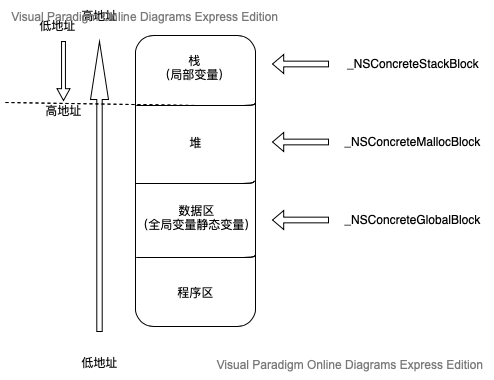

一、概述
Block是C语言的扩充功能。可以用一句话来表示Block: 带有自动变量的匿名函数。
匿名函数：没有函数名的函数，一对 {} 包裹的内容是匿名函数的作用域。
自动变量：栈上声明的变量(不是静态变量和全局变量)，是不可以在这个栈内声明的匿名函数中使用，但在Block中却可以。
虽然使用Block不用声明类，但是Block提供了类似OC的类一样可以通过成员变量来保存作用域外变量值的方法，那些在Block的一对 {} 里使用到但却是在 {} 作用域以外声明的变量，就是Block截获的自动变量。
关于block的语法，请戳这里→ block的语法
二、Block捕获变量
OC代码如下
1 | int globalVar = 15; |
我们通过clang命令（clang -rewrite-objc main.m）可将上述 main.m(OC) 文件转为 main.cpp（C++）文件(下同), 主要代码如下所示
注：如果使用该命令报错：’UIKit/UIKit.h’ file not found.
使用如下命令解决:
1 | clang -x objective-c -rewrite-objc -isysroot /Applications/Xcode.app/Contents/Developer/Platforms/iPhoneSimulator.platform/Developer/SDKs/iPhoneSimulator.sdk xxx.m |
更多请参考: 《Objective-C编译成C++代码报错》
1 | // 全局变量 |
block变量实际上就是一个指向__main_block_impl_0的指针，结构体从第三个元素开始分别是传入局部变量的值和变量指针。
block的方法实际上是指向结构体的指针firstBlock访问FuncPtr元素,在定义block时为FuncPtr元素传进去的__main_block_func_0方法，而tmp的赋值正是定义block时为结构体传进去的局部变量的值和变量的指针。
1 | 1. 对于局部变量（localVar）block将localVar直接复制到数据结构中来实现访问。并且block只截获 |
三、Block的类型
1. block的类型
block中的isa指向的是该block的Class。在block runtime中，定义了6种类型分别是：
1 | _NSConcreteStackBlock 栈上创建的block |
其中我们能接触到的主要是前3种,在内存中分布如下图所示:

2. 如何确定block的存储位置

在 ARC 环境下打印结果如下:
在 MRC 环境下打印结果如下:
1. Block不捕获变量
Block既不在栈中也不在堆中,ARC和MRC下都是如此。此时为全局数据区。
2. Block捕获变量(包括局部变量和全局变量)
MRC环境下: 访问外界变量中的Block默认存储在栈中。
ARC环境下: 访问外界变量中的Block默认存储在堆中。(实际上是放在栈区,然后ARC情况下自动又拷贝到堆区),自动释放。
3. Block的copy
ARC下,访问外界变量(局部变量和全局变量)的Block为什么要从自动从栈区拷贝到堆区呢?
配置在栈上的Block,如果其所属的变量作用域结束,该Block就被废弃,如一般的自动变量。对于超出block作用域任需要使用block的情况，Block提供了将Block从栈上复制到堆上的方法来解决这种问题，即便Block栈作用域已结束，但被拷贝到堆上的Block仍继续存在。
在ARC情况下，以下几种情况栈上的Block会自动复制到堆上：
1 | 1. 调用Block的copy方法 |
其它情况如向方法的参数中传递Block时，需要手动调用copy方法复制Block。将block从栈上复制到堆上相当消耗CPU,所以当block设置在栈上也能够使用时,就不用复制了,因为此时的复制只是浪费CPU资源。
不同类型的block使用copy方法的效果如下:
| block | 副本存储位置 | |
|---|---|---|
| _NSConcreteGlobalBlock | 数据区 | 什么也不做 |
| _NSConcreteStackBlock | 栈 | 从栈复制到堆 |
| _NSConcreteMallocBlock | 堆 | 引用记数增加 |
这里有几个测试例子: Block小测试
4. __block 修饰
使用__block修饰的自动变量，会自动转变成结构体__Block_byref_blockLocalVar_0。当我们实际访问该结构体时，实际是__forwarding的指针。
在进行copy复制前（在栈上），这时该结构体的__forwarding指针指向如下所示:

在copy操作完成之后,__block变量也被copy到堆上去了,这时候该结构体的__forwarding指针
指向如下图所示:
通过结构体中的__forwarding指针,无论是在block内部还是block外访问__block变量,也不管该变量在栈上或堆上,也都能保证访问的是同一个__block变量。
四、Block循环引用
block循环引用的原因:
一个对象有block类型的属性，从而持有这个block，如果此时block的代码块中使用到这个对象或者是对象的属性，会使block也持有该对象，导致两者互相持有，不能在做作用域结束后正常释放。
解决方法:
一: ARC环境下: 使用__weak / __unsafe_unretained / __block
1. __weak
1 | Person *person = [[Person alloc] init]; |
2. __unsafe_unretained
1 | __unsafe_unretained Person *person = [[Person alloc] init]; |
3. __block （注意避免产生循环引用）
1 | __block Person *person = [[Person alloc] init]; |
三种方法的比较:
__weak：不会产生强引用，指向的对象销毁时，会自动让指针置为nil
__unsafe_unretained：不会产生强引用，不安全，指向的对象销毁时，指针存储的地址值不变
__block：必须把引用对象置为nil，即调用该block一次
二: MRC下: 使用__block / __unsafe_unretained
1. __unsafe_unretained
1 | __unsafe_unretained Person *person = [[Person alloc] init]; |
2. __block
1 |
|
__block在MRC下有两个作用:
- 允许在block中访问和修改局部变量
- 禁止block对所引用的对象进行隐式retain操作
__block在ARC下的作用:
- 允许在block中访问和修改局部变量